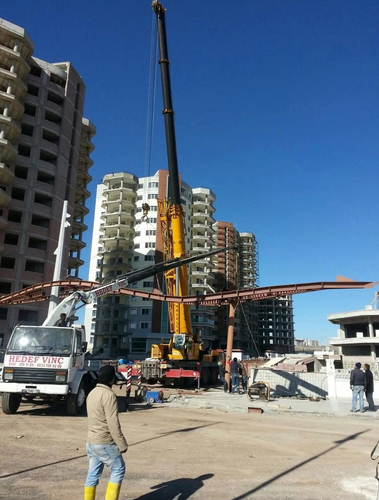

"Vinç kiralamak ne kadar?" sorusuna tek cümlelik bir cevap vermek mümkün değildir; çünkü aynı vinç, iki farklı işte bambaşka bir maliyet ortaya çıkarabilir. İyi haber şu: fiyatı belirleyen etkenler bellidir ve bunları bilen bir müşteri, hem daha hızlı teklif alır hem de teklifleri sağlıklı karşılaştırır. Bu yazıda, teklif istemeden önce bilmeniz gereken her şeyi sahadaki deneyimimizle anlatıyoruz.
Fiyatı Belirleyen 5 Ana Faktör
1. Yükün ağırlığı (tonaj)
İlk soru her zaman aynıdır: "Kaldırılacak yük kaç kilo veya kaç ton?" Yük ağırlığı, hangi sınıf vincin geleceğini belirler. Hafif bir klima dış ünitesi ile çelik bir çatı makası aynı makineyle kaldırılmaz. Vinç sınıfı büyüdükçe makinenin işletme maliyeti de büyür; dolayısıyla tonaj, fiyatın ilk ve en belirleyici kalemidir.
2. Çalışma yüksekliği ve yarıçap
İkinci kritik soru: yük kaç metre yukarı çıkacak ve vinç yüke ne kadar uzaktan ulaşacak? Vincin kapasitesi bom uzadıkça ve yük vinçten uzaklaştıkça düşer. Zemin katta 10 metre mesafeden kaldırılabilen bir yük, 8. kata veya binanın arka cephesine verilecekse çok daha büyük bir vinç gerektirir. Bu yüzden "5 tonluk yük" bilgisi tek başına yetmez; yükseklik ve mesafe birlikte değerlendirilir.
3. İşin süresi: saatlik, günlük veya proje bazlı
Yarım saatte biten bir konteyner indirme işi ile haftalarca sürecek bir şantiye montajı aynı şekilde fiyatlanmaz. Kısa işlerde genellikle iş başı veya saatlik ücret uygulanır; uzun süreli işlerde günlük ya da proje bazlı anlaşma her iki taraf için de daha avantajlıdır. İşin ne kadar süreceğini baştan netleştirmek, teklifin de net olmasını sağlar.
4. Adres ve mesafe
Vincin şantiyenize gelip dönmesi de bir maliyettir. Atölyemiz Milas'ta, Güllük ile Güvercinlik arasında olduğu için Milas–Bodrum hattındaki işlerde yol maliyeti düşüktür; daha uzak bölgelerde nakliye payı fiyata eklenir. Ayrıca dar sokak, dik rampa veya yumuşak zemin gibi erişim koşulları da hangi aracın gönderileceğini etkiler.
5. İşin niteliği ve zorluğu
Açık bir sahada palet indirmek ile enerji hattına yakın bir noktada cam panel monte etmek aynı iş değildir. Hassas yükler, gece çalışması, trafik kapatma gerektiren operasyonlar, denize indirme gibi özel işler ek planlama, ek ekipman ve daha deneyimli ekip ister. İşin zorluğu arttıkça hazırlık ve operasyon süresi uzar; fiyat da buna göre şekillenir.
Neden Telefonda Net Fiyat Verebiliyoruz?
Yukarıdaki beş bilgiyi telefonda aldığımızda, benzer yüzlerce işi yapmış bir ekip olarak işin büyüklüğünü dakikalar içinde kafamızda canlandırabiliyoruz. Bölgeyi tanıyoruz: hangi sokağa hangi araç girer, hangi zeminde ek plaka gerekir, hangi saatte trafik sorun olur — bunlar bizim için bilinmeyen değil. Standart işlerde bu yüzden telefonda net fiyat veriyoruz. Kararsız kaldığımız, riskli veya karmaşık operasyonlarda ise ücretsiz keşfe gelip fiyatı yerinde netleştiriyoruz; böylece iş günü sürpriz yaşanmaz.
Fiyatı Düşürmenin Yolları
Müşteri tarafında yapılabilecek birkaç basit hazırlık, hem işi hızlandırır hem maliyeti düşürür:
- Erişim alanını hazırlayın: Vincin kurulacağı alanı araçlardan ve malzemeden arındırın. Vinç geldiğinde beklemeden kurulum yapabilirse, kiralama süresi kısalır.
- Doğru ve eksiksiz bilgi verin: Yükün gerçek ağırlığı, kat yüksekliği ve saha fotoğrafı doğru vinci ilk seferde göndermemizi sağlar. Yanlış bilgiyle gelen küçük vinç geri döner; ikinci sefer size zaman ve para kaybettirir.
- Saatte esnek olun: İşiniz aciliyet taşımıyorsa, vincin o bölgedeki başka bir işiyle aynı güne planlanması yol maliyetini paylaştırır.
- Birden fazla işi birleştirin: Aynı gün kaldırılacak birkaç yük varsa hepsini tek seferde planlayın; her iş için ayrı sefer ödemezsiniz.
Pratik ipucu: Teklif istemeden önce telefonunuzla sahanın ve yükün birkaç fotoğrafını çekin, WhatsApp'tan gönderin. Bir fotoğraf, on dakikalık tarifin anlatamadığını saniyeler içinde anlatır ve çoğu zaman keşfe bile gerek kalmadan net fiyat almanızı sağlar.
Dikkat: En Ucuz Teklif Her Zaman En İyisi Değildir
Vinç işinde fiyat farkının bir nedeni vardır. Belirgin şekilde düşük bir teklif; bakımı aksatılmış bir makine, deneyimsiz bir operatör veya sigortasız bir operasyon anlamına gelebilir. Kaldırma işinde tasarrufun bedeli, düşen bir yük ya da devrilen bir vinç olduğunda, aradaki fark birkaç kat fazlasıyla geri döner. Teklifleri karşılaştırırken şunları sorun:
- Operatör deneyimli mi, bu tip işi daha önce yapmış mı?
- Makinenin periyodik bakımı ve kontrolleri düzenli yapılıyor mu?
- Operasyon sigortalı mı; olası hasarda sorumluluk kimde?
- Kaldırma planı ve sapan seçimini kim üstleniyor?
Hedef Vinç olarak vinçlerimizin bakımını kendi atölyemizde yapıyor, sahaya her zaman hazır makine ve deneyimli operatör gönderiyoruz. Fiyatı baştan net söylüyor, iş bittiğinde sürpriz kalem çıkarmıyoruz. İşinizi kısaca anlatın; size hem doğru vinci hem de net fiyatı söyleyelim.